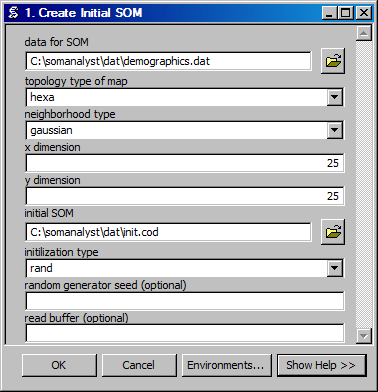

Create Initial SOM
Creates an initial SOM codebook file.
ArcGIS Reference

Parameters
- data for SOM
- The input data for the SOM. Need to determine the number of dimensions, and if using linear (lin) initialization the appropriate seed values.
- topology type of map
- The topology (geometry) of the self-organizing map. Hexagonal (hexa) has been preselected because the center points are all equidistant. Rectangular (rect) has a horizontal and vertical bias because diagonals are farther apart.
- neighborhood type
- The type of neighborhood or relationship between units in the SOM. Gaussian is selected by default, because it is most typical.
- x dimension
- The number of units of the SOM along the X axis.
- y dimension
- The number of units in the SOM along the Y axis.
- initial SOM
- The ouput file for the intial SOM.
- initilization type
- The initialization type to use for the some. Random (rand) has been selected, because it is more consistent with the method of self-organization, however linear (lin) will produce results more quickly.
- random generator seed
- The seed to use for the random number generator, by default the current time is used.
- read buffer
- The number of data lines to read at a time.
Code Reference
-
uiMapInit.mapinit(din, cout, topol, neigh, xdim, ydim, init, rand='#', buffer='#')
Creates a SOM codebook file using the specified parameters.
Note
This function makes system calls to SOM_PAK. SOM_PAK is limited to non-commercial use.
| Arguments : |
- din
The training data.
- cout
The codebook to create.
- topol
The topology of the SOM. This can be hexagonal (hexa) or rectagular (rect).
- neigh
The neighborhood type. This can be bubble or Gaussian.
- xdim
The number of units in the X-axis of the SOM.
- ydim
The number of units in the Y-axis of the SOM.
- init
The initation type. This can be random or linear.
- rand (optional)
The random seed. This is the current time by default.
- buffer (optional)
The size of the read buffer.
|
|---|
| Usage : | |
|---|